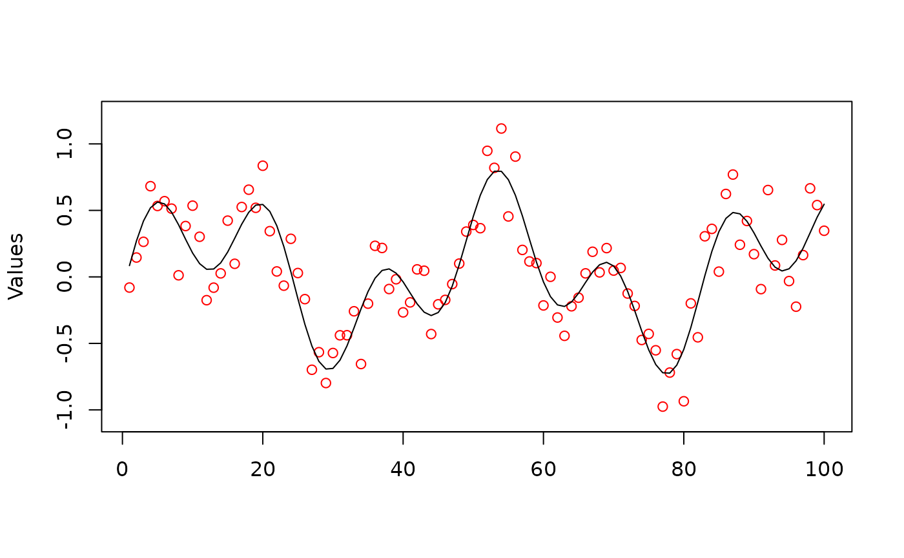
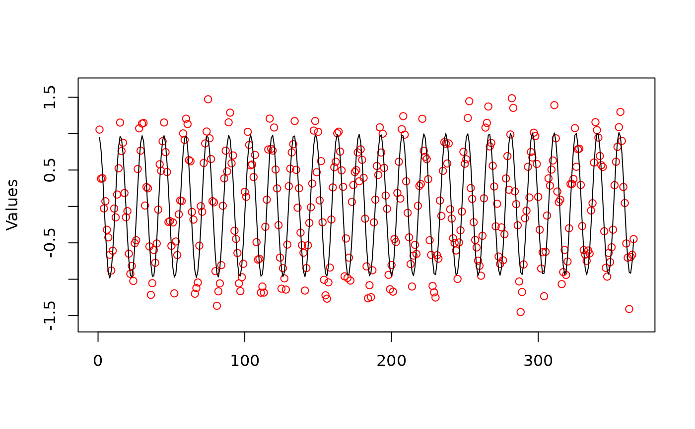
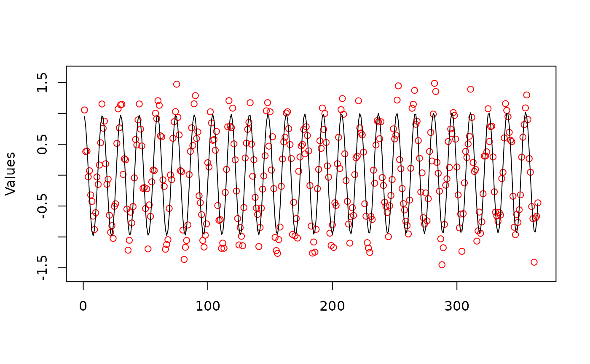

This function performs multi-frequential periodogram analysis for univariate temporal or spatial data series collected with equal intervals. Compared with the traditional periodogram used in spectral analysis, this method can detect overlapping signals with fractional frequencies. Fitting a joint polynomial-trigonometric model is achieved by Ordinary Least Squares (OLS) regression. The function also performs autocorrelation analysis of OLS residuals up to a number of lags determined by the user.
Arguments
- y
Vector of n observations (vector of integer or real numbers, or one-column matrix).
- MaxNFreq
Maximum number of frequencies to be estimated in the stepwise procedure (e.g. 2).
- MinFreq
Minimum value for frequency estimates (e.g. 3.0).
- MaxFreq
Maximum value for frequency estimates (e.g. 10). Must be larger than MinFreq and smaller than half of the number of observations in the series. If unspecified by the user
(MaxFreq=NA),MaxFreqis set to n/4 by the function.- ntrend
Number (0 to 3) of orthogonal polynomial components estimating the broad-scale trend, to be included in the joint polynomial-trigonometric model. Use 0 to estimate no trend component, only an intercept.
- nlags
Number of lags to be used for autocorrelation analysis of OLS residuals. Use 0 to bypass this analysis.
- alpha
Significance threshold for including frequencies.
- x
An object of class
mfpa- xlab, ylab
Labels for x and y axes
- ...
Further arguments passed to or from other methods
Value
A list containing the following elements:
frequencies: Vector of estimated frequencies of the model periodic components and associated R-squared. The frequencies are numbers of cycles in the whole (temporal or spatial) series under study.coefficients: Data frame containing OLS slope estimates, starting with the intercept, then the orthogonal polynomials modelling trend in increasing order, followed by the cosine and sine coefficients (alternating) in the order of the estimated frequencies. Columns: (1)coefficient: the OLS intercept or slope estimates; (2)prob: the associated probabilities.predicted: A vector (length n) of predicted response values (fitted values), including the trend if any. The data and predicted values can be plotted together using functionplot.mfpa; type plot(name.of.output.object). The data values are represented by red circles and the fitted values by a black line.auto_coeff: If nlags > 0: data frame containing the following columns. (1)lag: lags at which autocorrelation analysis of the OLS residuals is performed; (2)auto_r: vector of sample autocorrelation coefficients calculated from OLS residuals for each lag; (3)prob: vector of probabilities associated with the tests of significance of the sample autocorrelation coefficients.y: the original data series (one-column matrix).X: the matrix of explanatory variables; it contains a column of "1" to estimate the intercept, a column for each of the trend components (if any), and two columns for each frequency component, each frequency being represented by a cosine and a sine.r.squared.global: The global R-squared of the model and the adjusted R-squared.
Details
The fitting of a joint polynomial-trigonometric model is limited to ordinary least squares (OLS), with autocorrelation analysis of OLS residuals up to a certain lag. Orthogonal polynomials are used to model broad-scale trends, whereas cosines and sines model the periodic structures at intermediate scales. See Dutilleul (2011, section 6.5) and Legendre & Legendre (2012, section 12.4.4) for details. OLS regression could be replaced by an estimated generalized least squares (EGLS) procedure, as described in Dutilleul (2011).
In spectral analysis in general and in mfpa in particular, the cosines and sines are considered jointly in the search for the dominant frequency components since they are both required to fully account for a frequency component in a linear model. So, when either the cosine or the sine is significant, this is sufficient indication that a significant frequency component has been found. But see the first paragraph of the 'Recommendations to users' below.
The periodic phenomenon corresponding to each identified frequency is modelled by a cosine and a sine. The first pair ('cos 1', 'sin 1') corresponds to the first frequency, the second pair to the second frequency, and so on. An intercept is also computed, as well as a polynomial broad-scale trend if argument ntrend > 0. The coefficients shown for each periodic component ('cos' and 'sin') are the OLS regression coefficients. The tests of significance producing the p-values (called 'prob' in the output file) are 2-tailed parametric t-tests, as in standard OLS regression.
A global R-square statistic for the periodogram is computed as the variance of the fitted values divided by the variance of the data series. An R-squared corresponding to each frequency is also returned.
In the Dutilleul periodogram, the time unit is the length of the data series (in time units: seconds, hours, days, etc.). Hence, the frequency identified by a Dutilleul periodogram is the number of cycles of the periodic signal (how many full or partial cycles) along the time series. That number is an integer when the series contains an integer number of cycles; it may also be a real number when the number of cycles is fractional. The periodogram can identify several periodic phenomena with different frequencies. The estimated frequencies could be divided by an appropriate constant to produce numbers of cycles per second or day, or per meter or km, depending on the study.
To find the period (number of days, hours, etc.) of the process generating a periodic signal in the data, divide the length of the series (in days, hours, etc.) by the frequency identified by Dutilleul's periodogram.
Recommendations to users The mfpa code estimates the periodic frequencies to be included in the model through a combination of a stepwise procedure and non-linear optimisation. Following that, the contributions of the 'cos' and 'sin' components of all frequencies in the model are estimated by multiple linear regression in the presence of the intercept and trends (if any). Because the mfpa method estimates fractional frequencies, the cos-sin combinations are not orthogonal among the identified frequencies, and unnecessary frequencies may be selected as 'significant'.
1. It is important that users of this periodogram have hypotheses in mind about the frequencies of the processes that may be operating on the system under study and the number of periodic components they are expecting to find. If one asks for more components than the number of periodic phenomena at work on the system, the 'real' frequency usually has a strong or fairly strong R-squared and it is followed by other components with very small R-squared. Selection of frequencies of interest should thus be based more upon examination of the R-squares of the components rather than on the p-values. For short series in particular, the adjusted R-squared is an unbiased estimate of the variance of the data explained by the model. Even series of random numbers can produce 'significant' frequencies for periodic components; the associated (adjusted) R-squares will, however, be very small.
2. Function mfpa cannot detect frequencies < 1 (smaller than one cycle in the series) or larger than (n-1) where n is the number of observations in the series, the latter case corresponding to periods smaller than the interval between successive observations. When a periodic component with such a period is present in the data, Dutilleul's periodogram can detect harmonics of that frequency. Recommendation: when a frequency is detected that does not seem to correspond to a hypothesized process, one could check, using simulated data, if it could be produced by a process operating at a temporal scale (period) smaller than the interval between successive observations. An example is shown in Example 2.
3. When analysing a time series with unknown periodic structure, it is recommended to try first with more than one frequency, say 2 or 3, and also with a trend. Eliminate the non-significant components, step by step, in successive runs, starting with the trend(s), then eliminate the weakly significant periodic components, until there are only highly significant components left in the model.
References
Dutilleul, P. 1990. Apport en analyse spectrale d'un périodogramme modifié et modélisation des séries chronologiques avec répétitions en vue de leur comparaison en fréquence. Doctoral Dissertation, Université Catholique de Louvain, Louvain-la-Neuve, Belgium.
Dutilleul, P. 1998. Incorporating scale in ecological experiments: data analysis. Pp. 387-425 in: D. L. Peterson & V. T. Parker [eds.] Ecological scale - Theory and applications. Columbia University Press, New York.
Dutilleul, P. 2001. Multi-frequential periodogram analysis and the detection of periodic components in time series. Commun. Stat. - Theory Methods 30, 1063-1098.
Dutilleul, P. R. L. 2011. Spatio-temporal heterogeneity - Concepts and analyses. Cambridge University Press, Cambridge.
Dutilleul, P. and C. Till. 1992. Evidence of periodicities related to climate and planetary behaviors in ring-width chronologies of Atlas cedar (Cedrus atlantica) in Morocco. Can. J. For. Res. 22: 1469-1482.
Legendre, P. and P. Dutilleul. 1992. Introduction to the analysis of periodic phenomena. 11-25 in: M. A. Ali [ed.] Rhythms in fishes. NATO ASI Series, Vol. A-236. Plenum, New York.
Legendre, P. and L. Legendre. 2012. Numerical Ecology. 3rd English edition. Elsevier, Amsterdam.
Examples
### Example 1
# Simulate data with frequencies 2.3 and 6.1 and a random component, n = 100.
# No trend, no autocorrelated residuals.
y <- as.matrix(0.4*(sin(2.3*2*pi*(1:100)/100)) +
0.4*(sin(6.1*2*pi*(1:100)/100)) + 0.2*rnorm(100))
res <- mfpa(y, MaxNFreq = 2, MinFreq = 2, ntrend = 0, nlags = 0)
# Compute the periods associated with the two periodic components. Each
# frequency in element $frequencies is a number of cycles in the whole series.
# The periods are expressed in numbers of time intervals of the data series. In
# this example, if the data are measured every min, the periods are in min.
periods <- 100/res$frequencies$frequency
# Draw the data series and the fitted (or predicted) values
plot(res)

### Example 2
# Generate hourly periodic data with tide signal (tide period T = 12.42 h)
# during 1 year, hence 24*365 = 8760 hourly data. See
# https://en.wikipedia.org/wiki/Tide.
# In this simulation, constant (c = 0) puts the maximum value of the cosine at
# midnight on the first day of the series.
periodic.component <- function(x, T, c) cos((2*pi/T)*(x+c))
tide.h <- periodic.component(1:8760, 12.42, 0)
# The number of tides in the series is: 8760/12.42 = 705.314 tidal cycles
# during one year.
# Sample the hourly data series once a day at 12:00 noon every day. The
# periodic signal to be detected has a period smaller then the interval between
# consecutive observations and its frequency is larger than (n-1). The sequence
# of sampling hours for the tide.h data is:
h.noon <- seq(12, 8760, 24)
tide.data <- tide.h[h.noon]
length(tide.data)
#> [1] 365
# The series contains 365 sampling units
# Compute Dutilleul's multi-frequential periodogram
res.noon <- mfpa(tide.data, MaxNFreq = 1, MinFreq = 2, ntrend = 1, nlags = 2)
# Examine the frequency detected by the periodogram, element
# res.noon$frequencies. This is a harmonic of the tide signal in the original
# data series tide.h.
# Compute the period of the signal in the data series sampled hourly:
period <- 365/res.noon$frequencies$frequency
# Draw the data series and the adjusted values
plot(res.noon)
 # Repeat this analysis after addition of random noise to the tide data
tide.noise <- tide.data + rnorm(365, 0, 0.25)
res.noise <- mfpa(tide.noise, MaxNFreq = 1, MinFreq = 2, ntrend = 1, nlags = 2)
plot(res.noise)

# Repeat this analysis after addition of random noise to the tide data
tide.noise <- tide.data + rnorm(365, 0, 0.25)
res.noise <- mfpa(tide.noise, MaxNFreq = 1, MinFreq = 2, ntrend = 1, nlags = 2)
plot(res.noise)
